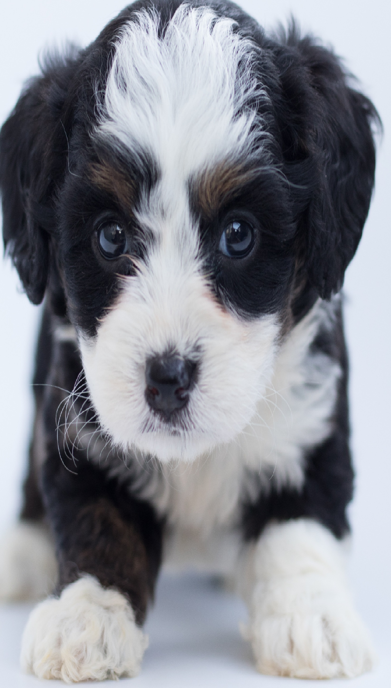

<ion-app>
    <ion-menu side="start" menuId="first">
        <ion-header>
          <ion-toolbar color="secondary">          
            <ion-menu-toggle auto-hide="false">
                <ion-avatar (click)="openPerfil()">
                    
                  </ion-avatar>
            </ion-menu-toggle>
          </ion-toolbar>
        </ion-header>
        <ion-content>
          <ion-list>
            <ion-menu-toggle auto-hide="false">
              <ion-item (click)="openHome()">
                  <ion-icon name="search" slot="start"></ion-icon>Procurar Toto
              </ion-item>
            </ion-menu-toggle>
            <ion-menu-toggle auto-hide="false">
                <ion-item (click)="openRelat()">
                    <ion-icon name="list-box" slot="start"></ion-icon>Relatório
                </ion-item>
              </ion-menu-toggle>
            <ion-menu-toggle auto-hide="false">
              <ion-item (click)="openHelp()">
                <ion-icon name="help-circle" slot="start"></ion-icon>Ajuda
              </ion-item>
            </ion-menu-toggle>
            <ion-menu-toggle auto-hide="false">
              <ion-item (click)="openConfig()">
                <ion-icon name="settings" slot="start"></ion-icon>Configurações
              </ion-item>
            </ion-menu-toggle>
          </ion-list>
        </ion-content>
      </ion-menu>
  <ion-router-outlet main>

  </ion-router-outlet>
</ion-app>
